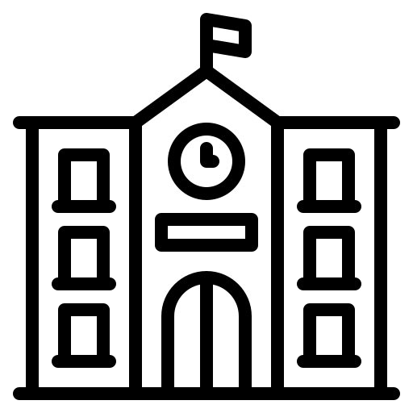
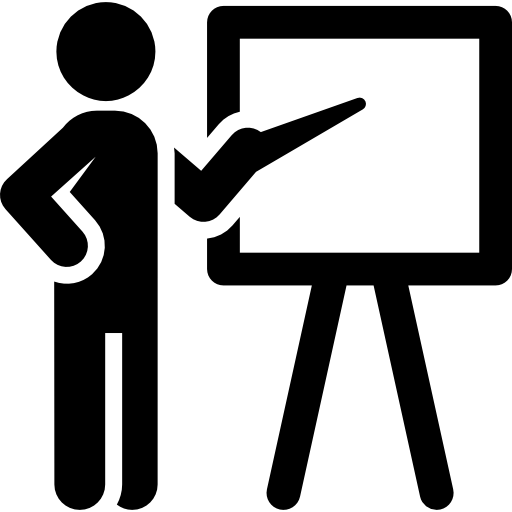

Os Objetivos de Desenvolvimento Sustentável (ODS) são uma agenda mundial adotada durante a Cúpula das Nações Unidas sobre o Desenvolvimento Sustentável em setembro de 2015 composta por 17 objetivos e 169 metas a serem atingidos até 2030.
Nesta agenda estão previstas ações mundiais nas áreas de erradicação da pobreza, segurança alimentar, agricultura, saúde, educação, igualdade de gênero, redução das desigualdades, energia, água e saneamento, padrões sustentáveis de produção e de consumo, mudança do clima, cidades sustentáveis, proteção e uso sustentável dos oceanos e dos ecossistemas terrestres, crescimento econômico inclusivo, infraestrutura, industrialização, entre outros.
Metas
Meta 1
Até 2030, garantir que todas as meninas e meninos completem o ensino primário e secundário livre, equitativo e de qualidade, que conduza a resultados de aprendizagem relevantes e eficazes
Meta 2
Até 2030, aumentar substancialmente o número de jovens e adultos que tenham habilidades relevantes, inclusive competências técnicas e profissionais, para emprego, trabalho decente e empreendedorismo

Meta 3
Construir e melhorar instalações físicas para educação, apropriadas para crianças e sensíveis às deficiências e ao gênero, e que proporcionem ambientes de aprendizagem seguros e não violentos, inclusivos e eficazes para todos

Meta 4
Até 2030, substancialmente aumentar o contingente de professores qualificados, inclusive por meio da cooperação internacional para a formação de professores, nos países em desenvolvimento, especialmente os países menos desenvolvidos e pequenos Estados insulares em desenvolvimento
Moro em Samambaia - DF e escolhi a ODS 4 - Educação de qualidade, pois a importância da educação é fundamental para o desenvolvimento da humanidade e do indivíduo.